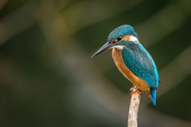

1
人是怎么学会一件事的？
体验 → 观察 → 思考 → 实践。后面有学骑车的完整故事。


跟同桌说说：你觉得哪段是真的？


你点开一段视频：猫在动、有声音、毛茸茸的。你不需要别人先告诉你"猫是什么"——你亲眼看到了。这就是"体验"。

"真猫走路有重量感，毛不会一直完美，背景会和环境对得上……"你在脑子里建了一个"真猫的标准"——这就是"思考"。

你投了一票，以为找到了真的——结果老师揭晓：三段全是 AI 生成的！你的"真猫标准"要改一改了。这就是"实践"——试了才知道对不对。
 蜘蛛结网
蜘蛛结网 蒲公英种子飘
蒲公英种子飘
鸟在天空飞先点左边自然现象，再点右边发明。配对成功会变色。


改提示词 = AI 的调参。 你说得越清楚，AI 越不容易画错。
全班一起比手指 — 1根=猫 2根=狗 3根=车 4根=房子 5根=花

☐ 我们的问题： ________________________________
☐ 我写的 Prompt： ________________________________
☐ AI 说了什么： ________________________________
☐ 我们改了什么： ________________________________